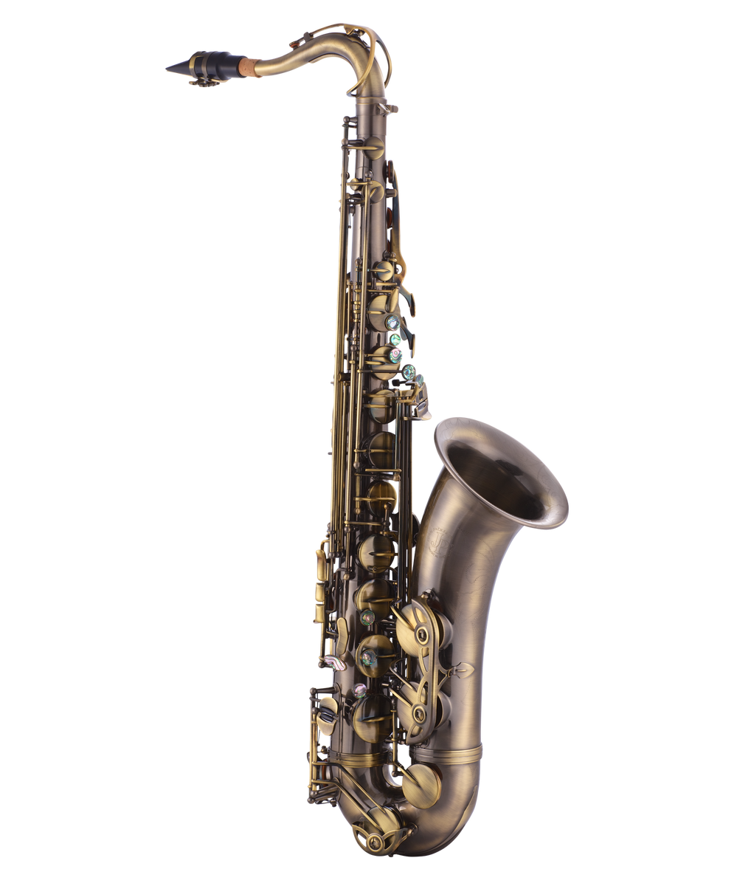

Музыкальные инструменты
Что звучит, кто играет и за что каждый отвечает.
Струнные инструменты

В струнных звук рождается из колебаний струны, корпус их усиливает. Классический набор: скрипка, альт, виолончель, контрабас. В оркестре они держат основу звучания.
В современной музыке чаще всего слышна гитара: акустическая, электрическая и бас-гитара. На них строятся и рок‑рифы, и спокойный аккомпанемент в поп-музыке.
Клавишные инструменты

Фортепиано появилось в начале XVIII века и быстро стало главным домашним и концертным инструментом Европы. На нём писали и играли Бах, Моцарт, Бетховен, Шопен, Рахманинов.
Сегодня к фортепиано добавились синтезаторы и миди-клавиатуры. Они позволяют в одной клавиатуре имитировать оркестр, бас, ударные и электронные звуки.
Духовые инструменты
В духовых звук создаётся потоком воздуха. Основные представители: флейта, кларнет, гобой, фагот, труба, тромбон, саксофон.
В симфоническом оркестре они добавляют яркие тембры и фанфары. В джазе саксофон и труба часто ведут мелодию и сразу узнаются по звучанию.
Сводная таблица
Кратко о том, что обычно играют разные группы инструментов.
| Группа | Примеры | Основная роль |
|---|---|---|
| Струнные | Скрипка, гитара | Мелодия, аккомпанемент, фон |
| Клавишные | Фортепиано, синтезатор | Гармония, аккорды, фактура |
| Духовые | Труба, саксофон | Соло, фанфары, яркие акценты |
Ссылки
Про устройство и виды инструментов можно почитать в статье на Википедии .
Небольшой интерактив
Три простых скрипта для учебного задания.